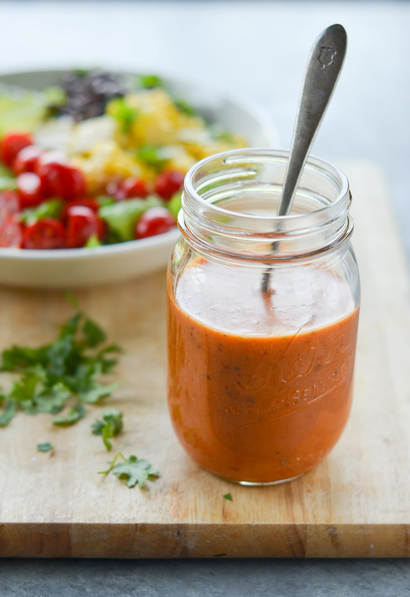

Chipotle Salad Dressing Recipe
Home

Description
This copy-cat Chipotle salad dressing recipe is smoky, sweet, and tangy just like the original.
We love Chipotle salad dressing so we came up with this copycat version by fiddling around with the ingredients listed on the Chipotle website.
Why?
I know you guys have waited all day for some Chipotle and finally got to the end of the line.
Then you were told there is no more salad dressing left. Total buzzkill and ruins your whole day.
Some people just want as much salad dressing as they can possibly have and do not want to be confined to the two dresssing rule that Chipotle has mandated.
WHAT YOU WILL NEED
- 6 TBSP of Red Wine Vinegar: Adds the tangy kick that balances the sweetness of the honey and richness of the oil.
- 3 TBSP of Honey: A touch of sweetness that rounds out all the flavors.
- 3/4 cup of Vegetable Oil: A neutral oil lets the smoky, tangy flavors shine.
- 1/2 tsp of Dried Oregano & 1/8 tsp of Cumin: For an earthy flavor.
- 1 1/2 tsp of Salt: Everything needs salt.
- 1/2 tsp of Ground Black Pepper: Adds a spiciness to the dressing.
- 2 Chipotle Peppers in Adobo: Everybody knows the best part of the salad dressing is the smoky heat that the peppers provide.
- 2 Small Garlic Cloves: Adds a savory flavor without overpowering the dressing.
STEP-BY-STEP INSTRUCTIONS
- Put all ingredients in a bowl
- Dump the bowl's contents in a blender
- Blend everything and enjoy!